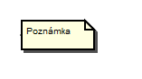

UML - Diagramy tried (Class Diagram)
Elementy a spojenia v UML .FRI:
- Trieda je základným elementov v diagrame tried. Modeluje sa ako obdĺžnik rozdelený na tri oblasti. Najvrchnejšia oblasť obsahuje meno triedy. Stredená oblasť obsahuje zoznam atribútov triedy a spodná oblasť obsahuje zoznam metód triedy. V triede zoznam atribútov a ani zoznam metód nemusí byť uvedený. Atribúty sa zobrazujú ako meno premennej oddelené dvojbodkou od typu premennej. Metódy sa uvádzajú podľa syntaxe: Viditeľnosť MenoMetódy(Parameter1:Typ,....):TypNávratovejHodnoty. Viditeľnosť určuje, či je metóda viditeľná aj mimo triedy alebo či je viditeľná len v triede samotnej, či je viditeľná v potomkovi a pod. V hlavičke metódy môže byť uvedený zoznam parametrov, kde každý parameter má uvedený dátový typ. Zoznam parametrov nie je povinný. Typ návratovej hodnoty sa oddeľuje dvojbodkou. Ak typ návratovej hodnoty nie je uvedený, znamená to, že metóda nevracia žiadnu hodnotu.
- Interface je trieda, ktorá obsahuje iba čisto virtuálne metódy. Intrerface sa modeluje podobne ako trieda, ale nad menom triedy je uvedený stereotyp "interface".
- Závislosť ()je vzťah medzi dvomi triedami. Tento vzťah je však veľmi slabý, t.j. vzťah nie je implementovaný prostredníctvom atribútov triedy, ale ako vstupná premenná metódy triedy. Závislosť sa modeluje ako orientovaná bodkovaná čiara, pričom šípka sa nachádza pri tej triede, ktorá závysí od druhej triedy.
- Asociácia je vzťah medzi dvomi triedami a vyjadruje, že triedy spolu vzájomne komunikujú a sú si "rovnocennými partnermi". V rámci vzťahu je možné uviesť početnosť každej triedy vo vzťahu. Možné početnosti sú 1:1, 1:N, M:N,.... Asociácia sa modeluje ako jednostranne neorientovaná, jednostranne orientovaná alebo obojstranne orientovaná čiara.
- Agregácia je vzťah medzi dvomi triedami, kde jedna trieda "obsahuje" druhú triedu. Tento vzťah znamená, že jedna trieda predstavuje v rámci vzťahu "celok" a druhá trieda je súčasťou tohto celku. Asociácia sa modeluje ako čiara s prázdnym kosoštvorcom na jednom konci. Kosoštvorec sa dotýka tej triedy, ktorá "obsahuje" druhú triedu. V rámci vzťahu je možné uviesť početnosť každej triedy vo vzťahu. Možné početnosti sú 1:1, 1:N, M:N,....
- Kompozícia je vzťah medzi dvomi triedami, kde jedna trieda "obsahuje" druhú triedu. Rozdiel oproti asociácii je v tom, že ak zanikne trieda, ktorá v sebe "obsahuje" druhú triedu, tak zanikne aj druhá trieda. Kompozícia sa modeluje ako čiara s plným kosoštvorcom na jednom konci. Kosoštvorec sa dotýka tej triedy, ktorá "obsahuje" druhú triedu. V rámci vzťahu je možné uviesť početnosť každej triedy vo vzťahu. Možné početnosti sú 1:1, 1:N, M:N,....
- Generalizácia je vzťah medzi dvom triedami a modeluje sa ako plná čiara s prázdnym trojuholníkom dotýkajúcim sa základnej triedy (nazýva sa aj predok). Odvodená trieda (nazýva sa aj potomok) "dedí" všetky atribúty a metódy, ktoré sú zastúpené v základnej triede. Odvodená trieda sama potom môže implementovať niektoré alebo všetky jej viditeľné metódy zo základnej triedy alebo môže pridať nové atribúty a metódy.
- Objekt sa modeluje ako obdĺžnik. Ak obsahuje aj atribúty, tak je rozdelený vodorovnou čiarou na dve oblasti. Objekt zobrazuje meno, atribúty a nezobrazuje operácie (v diagrame tried sa zobrazujú). Meno rovnako ako aj atribúty objektu môžu mať hodnoty. Meno objektu býva podčiarknuté a od názvu triedy je oddelené dvojbodkou. Objekt môže byť buď pomenovaný alebo nepomenovaný.
- Balíček sa používa na zoskupovanie elementov, ktoré spolu zdieľajú rovnakú hierachiu dedičnosti alebo spolu navzájom úzko spolupracujú. Takto zoskupeným elementov poskytuje balíček súhrnné pomenovanie (namespace).
- Poznámka slúži na bližšie popísanie jednotlivých elementov diagramu a je možné ju pripojiť iba k entitám, nie k vzťahom medzi entitami.
- Čiara k poznámke znázorňuje, ktorú entitu poznámka bližšie popisuje.




Pre viac informácii odporúčam navštíviť iné zdroje, napríklad Class Diagram wiki